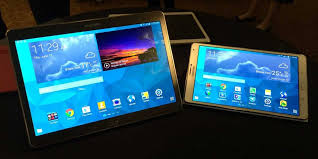
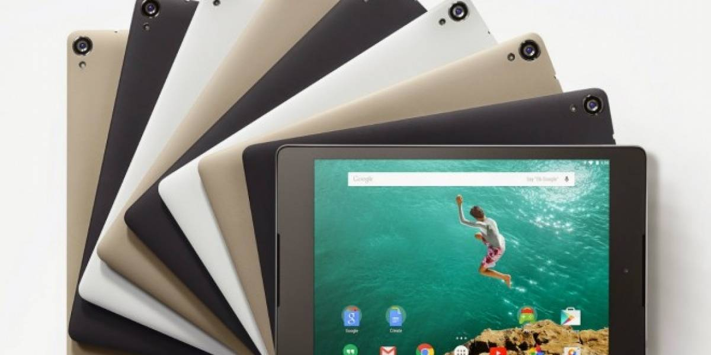

- 

- 

Quines Somos?
La unica empresa capaz de solventar las necesidades de nuestros clientes
y con la mas nueva tecnologia en dispositivos Tablets, haserquece a nuestro local
y con gusto le atenderemos.
Nos ubicamos en San Miguel Barrios el centro local #4.
Acerca de Tablets
1. ¿iPad o Android?
2. Si eliges Android, que sea una versión reciente
3. Las Amazon Fire HD son baratas pero ¿merecen la pena?
4. Tablets chinas: ¿sí o no?
5. Especificaciones: qué es lo importante
Bienvenido
Las tabletas digitales son un producto de moda. Táctiles y manejables, estas pequeñas computadoras
son de mayor tamaño que los smartphones o las PDA, y hacen las delicias de los usuarios gracias a las
variadas aplicaciones creadas para su disfrute.
Además de la decisión inicial de elegir entre comprar un iPad o una tablet Android (por no hablar de Windows 10...
¡e incluso Fire OS!), tu aventura de elegir una tablet no ha hecho más que empezar. ¿siete o diez pulgadas?
¿Samsung, Lenovo, BQ? ¿Y cuánto dinero deberías gastarte? ¿100, 200, 400 $$?